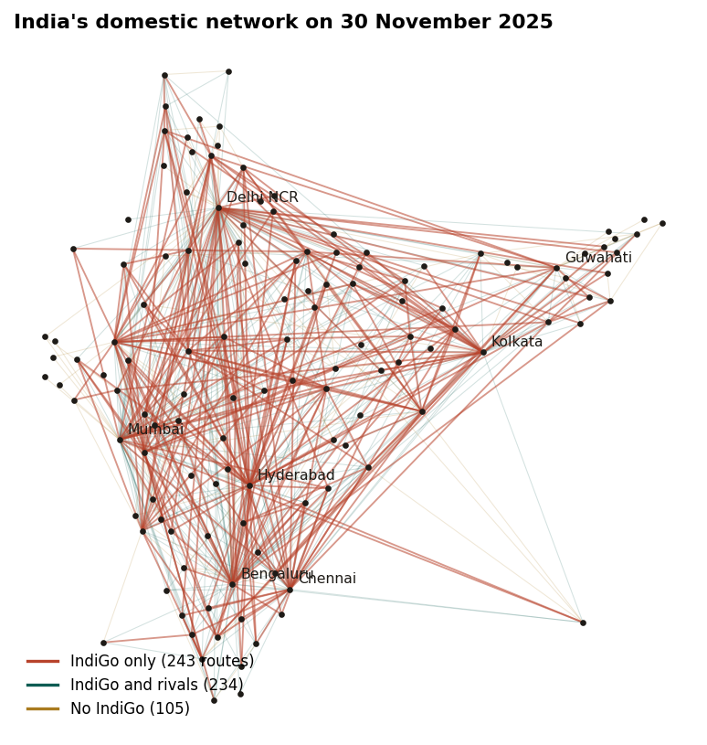
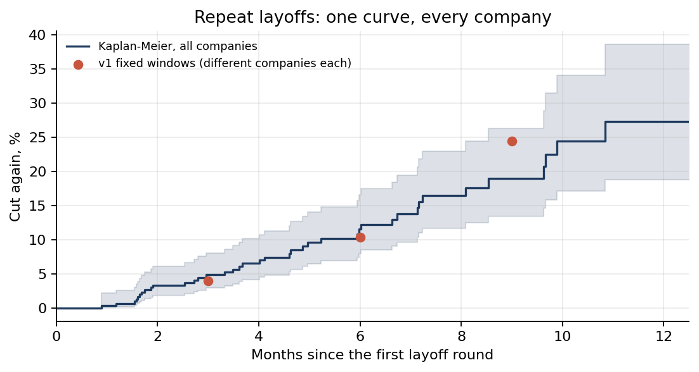

Data analyst · SQL, Power BI, Python
Sanjana Maini
I find the decision inside messy data, and show how sure I am.
Computer science graduate (AI and ML) looking for data and BI analyst roles, or applied AI and automation roles. Every project below starts with its finding and states what it does not show. When a number turns out wrong, the page says so.
01Projects, as findings




02About
B.Tech in Computer Science and Engineering (AI and ML), SRM University AP, 2021 to 2025. I work on the seam between data and decisions: SQL, Power BI and Python on real datasets, evaluated the way the decision will actually be made.
I also build systems that act on decisions: Pilot, a five-agent prototype that operates a browser from a plain-English goal. Based in Vijayawada; open to Gurugram, Bengaluru, Hyderabad, Mumbai or remote work. Available from December 2026.
03Experience
- ScienceWaale2022 to 2025
- Co-Founder. Planned content with partner educators from audience data for a YouTube channel teaching quantitative aptitude and logical reasoning: 59 videos, 200,000+ views, 1,700+ subscribers.
- India Urban Data ExchangeJun to Aug 2023
- Summer Intern. Contributed to consent collection and retrieval features of a JavaScript consent-management framework for government data sharing.
- Student Council, SRM University AP2022 to 2024
- General Secretary (2023 to 2024), events team (2022 to 2023). Coordinated student clubs, faculty and university leadership; initiatives reached 20,000+ students and attendees.
- GUVI Geek NetworksNov 2021 to May 2022
- Campus Ambassador. Wrote for the learner forum, answered peers' questions on Quora and proposed user-acquisition plans; named best performer of the month in February 2022.
04Education and skills
SRM University, AP: B.Tech in Computer Science and Engineering (AI and ML), Aug 2021 to Aug 2025, CGPA 8.66 out of 10.
- Languages
- Python (pandas, NumPy), SQL (window functions, CTEs), R, JavaScript, C++
- Data quality and analysis
- Data validation, data cleaning, exploratory data analysis, trend and anomaly detection, business rules documentation
- BI and Excel
- Power BI (DAX), Excel (pivot tables, charts, slicers)
- ML and AI
- scikit-learn, LLM agents (Gemini API), FastAPI
- Methods
- time-based validation, leakage testing, empirical Bayes, survival analysis, expected-loss decision rules
Product Matters 5.0, E-Cell IIT Guwahati (Certificate of Merit, top 15%). NPTEL Foundations of R Software, IIT Kanpur (Elite + Gold, 94%). Data Analytics Job Simulation, Deloitte (Forage). IBM Exploratory Data Analysis for Machine Learning. Google Foundations of Project Management.
Let us talk
Open to data and BI analyst roles and applied AI or automation roles, in Gurugram, Bengaluru, Hyderabad, Mumbai or remote. The quickest way to reach me is email.